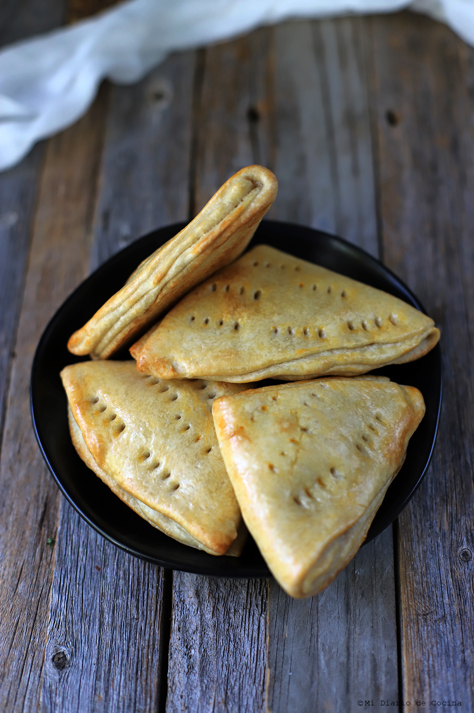

How to cook Dobladitas

Description
This is a great recipe for Chilean bread. Dobladitas are so easy, ready in a few minutes, and taste heavenly. They are best when warm right from the oven or toasted with butter, jelly, or even some guacamole the next day.
Ingredients
- 4 cups all-purpose flour
- 1 cup unsalted butter, melted
- 1/2 cup milk
- 2 teaspoons baking powder
- 1 teaspoon salt
- 3 tablespoons unsalted butter, melted
Instructions / Steps
- Preheat the oven to 450 degrees F (230 degrees C). Grease a baking sheet.
- Whisk flour, 1 cup melted butter, milk, baking powder, and salt together in a bowl until begins to pull together.
- Turn dough out onto a lightly floured surface; knead until smooth and elastic.
- Roll dough out to 1/8-inch thickness; cut into 8-inch circles. Brush circles with remaining 3 tablespoons melted butter.
- Fold each circle in half, then fold in half again to form triangles. Press firmly to seal the layers; place on the prepared baking sheet.
- Bake in the preheated oven until golden brown, about 15 minutes. Serve warm.